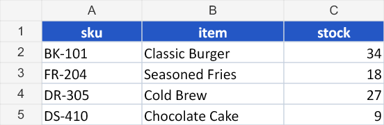

Beginner · 3 minutes
I need to export database records
Feature Workbook creation and record export
Use this when: Your application has an array of records and a user needs a normal Excel file they can open, filter, and share.
import { createWorkbook } from "@entree_pos/xlsx";
const workbook = createWorkbook("Inventory");
const sheet = workbook.sheet();
sheet.setData([
{ sku: "BK-101", item: "Classic Burger", stock: 34 },
{ sku: "FR-204", item: "Seasoned Fries", stock: 18 },
{ sku: "DR-305", item: "Cold Brew", stock: 27 },
{ sku: "DS-410", item: "Chocolate Cake", stock: 9 }
]);
sheet.range("A1:C1").style({
bold: true,
color: "#FFFFFF",
fill: "#2457C5",
horizontal: "center",
vertical: "center",
border: { bottom: { style: "medium", color: "#17202A" } }
});
sheet.range("A1:C5").style({
border: {
outline: { style: "thin", color: "#CBD5E1" },
inside: { style: "thin", color: "#CBD5E1" }
}
});
sheet.range("C2:C5").style({
numberFormat: "#,##0",
horizontal: "right"
});
sheet.autoFit({ min: 12, max: 28, padding: 3 });
await workbook.save("01-create-workbook.xlsx");
Be aware
Object keys become column headers in insertion order. Normalize records first if different rows can contain different keys.
Show advanced tip
Return the workbook from an API
Use toBuffer() when returning a file from an HTTP route, or toBase64() when another service expects text.